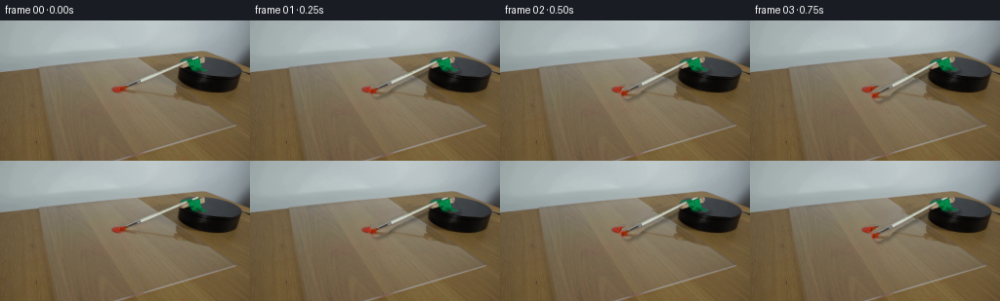
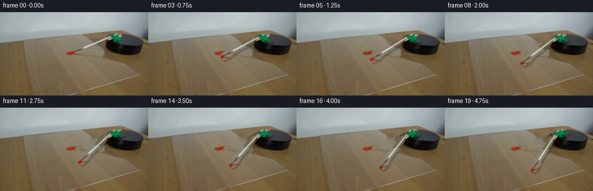
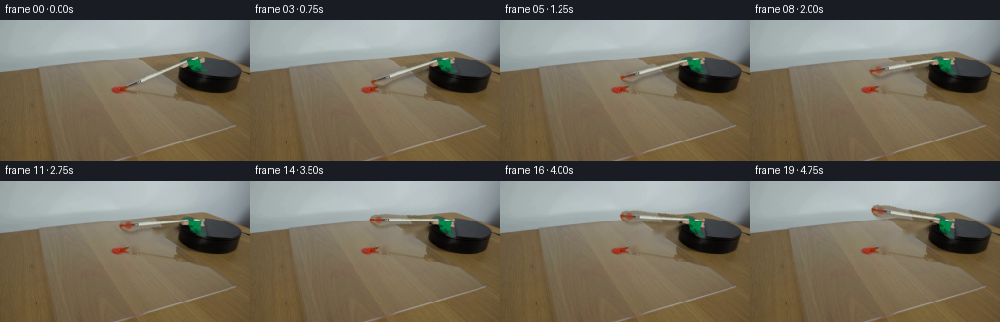
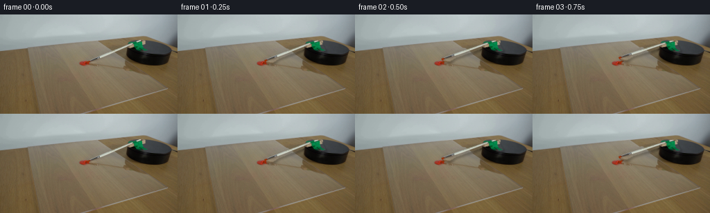

CODING AGENTS AS PIXEL WORLD MODELS
traex/DeepSeek-V4.1-Flash · 0130
点击播放 · 原生 RGB 像素
逐轮保存的候选
回放视频、检查图与代码变化。
每份候选均可单独播放。实际图片检查记录在下方工具轨迹中。
候选 01播放与检查图
点击播放 · 原生 RGB 像素


展开代码变化
--- 上一保存版本
+++ 本次保存版本
@@ -0,0 +1,206 @@
+from pathlib import Path
+
+import cv2
+import numpy as np
+from PIL import Image
+
+import artifact_io
+
+
+CASE_DIR = Path(__file__).resolve().parent
+SOURCE_PATH = CASE_DIR / "first_frame.png"
+WIDTH, HEIGHT = 256, 144
+FRAME_COUNT = 20
+FPS = 4
+
+
+def _capsule_mask(p1, p2, r1, r2):
+ """Rasterize a tapered capsule in image coordinates."""
+ yy, xx = np.mgrid[0:HEIGHT, 0:WIDTH]
+ ax, ay = float(p1[0]), float(p1[1])
+ bx, by = float(p2[0]), float(p2[1])
+ vx, vy = bx - ax, by - ay
+ denom = vx * vx + vy * vy
+ t = ((xx - ax) * vx + (yy - ay) * vy) / max(denom, 1e-9)
+ t = np.clip(t, 0.0, 1.0)
+ qx = ax + t * vx
+ qy = ay + t * vy
+ radius = r1 + t * (r2 - r1)
+ return (xx - qx) ** 2 + (yy - qy) ** 2 <= radius * radius
+
+
+def _green_grip_mask(source):
+ """Recover the compact green brush grip while ignoring the black mount."""
+ rgb = source.astype(np.int16)
+ r, g, b = rgb[:, :, 0], rgb[:, :, 1], rgb[:, :, 2]
+ green = ((g > r + 14) & (g > b + 8) & (g > 70)).astype(np.uint8)
+ green[:34] = 0
+ green[58:] = 0
+ green[:, :178] = 0
+ green[:, 218:] = 0
+ green = cv2.morphologyEx(green, cv2.MORPH_CLOSE, np.ones((3, 3), np.uint8))
+ contours, _ = cv2.findContours(green, cv2.RETR_EXTERNAL, cv2.CHAIN_APPROX_SIMPLE)
+ if not contours:
+ return np.zeros((HEIGHT, WIDTH), dtype=bool)
+ points = np.concatenate([c.reshape(-1, 2) for c in contours], axis=0)
+ hull = cv2.convexHull(points)
+ filled = np.zeros((HEIGHT, WIDTH), dtype=np.uint8)
+ cv2.fillConvexPoly(filled, hull, 1)
+ filled = cv2.dilate(filled, np.ones((3, 3), np.uint8), iterations=1)
+ return filled.astype(bool)
+
+
+def _build_brush_mask(source):
+ handle = _capsule_mask((191.0, 41.5), (145.0, 60.5), 4.7, 5.6)
+ ferrule = _capsule_mask((147.0, 58.8), (137.0, 63.2), 5.3, 5.8)
+ bristles = _capsule_mask((143.0, 60.5), (128.0, 69.0), 5.2, 6.6)
+ wedge = np.zeros((HEIGHT, WIDTH), dtype=np.uint8)
+ polygon = np.array(
+ [[139, 57], [148, 59], [147, 65], [137, 73], [127, 73], [125, 68], [130, 63]],
+ dtype=np.int32,
+ )
+ cv2.fillPoly(wedge, [polygon], 1)
+ grip = _green_grip_mask(source)
+ return handle | ferrule | bristles | wedge.astype(bool) | grip
+
+
+def _paint_mask(source):
+ rgb = source.astype(np.int16)
+ r, g, b = rgb[:, :, 0], rgb[:, :, 1], rgb[:, :, 2]
+ red = (r > 92) & (r > g * 1.42) & (r > b * 1.30)
+ red[:58] = 0
+ red[84:] = 0
+ red[:, :104] = 0
+ red[:, 141:] = 0
+ red = cv2.dilate(red.astype(np.uint8), np.ones((3, 3), np.uint8), iterations=1)
+ return red.astype(bool)
+
+
+def _static_background(source, brush_mask, paint_mask):
+ """Remove the movable brush, then restore the paint that remains on the sheet."""
+ inpaint_mask = (brush_mask.astype(np.uint8) * 255)
+ inpaint_mask = cv2.dilate(inpaint_mask, np.ones((3, 3), np.uint8), iterations=1)
+ background = cv2.inpaint(
+ cv2.cvtColor(source, cv2.COLOR_RGB2BGR),
+ inpaint_mask,
+ 3.0,
+ cv2.INPAINT_TELEA,
+ )
+ background = cv2.cvtColor(background, cv2.COLOR_BGR2RGB)
+
+ # The paint is part of the scene, not part of the moving brush.
+ restore = cv2.dilate(paint_mask.astype(np.uint8), np.ones((3, 3), np.uint8), iterations=1)
+ background[restore.astype(bool)] = source[restore.astype(bool)]
+
+ # Keep the black platform's stable edge and body where the brush does not cover it.
+ rgb = source.astype(np.int16)
+ dark = np.max(rgb, axis=2) < 55
+ platform = np.zeros((HEIGHT, WIDTH), dtype=np.uint8)
+ platform[43:78, 176:247] = dark[43:78, 176:247]
+ platform = cv2.morphologyEx(platform, cv2.MORPH_CLOSE, np.ones((3, 3), np.uint8))
+ background[platform.astype(bool)] = source[platform.astype(bool)]
+ return background
+
+
+def _feathered_alpha(mask):
+ alpha = mask.astype(np.float32)
+ alpha = cv2.GaussianBlur(alpha, (0, 0), 0.55)
+ alpha = np.clip(alpha * 1.08, 0.0, 1.0)
+ return alpha
+
+
+def _rotate_layer(layer, alpha, pivot, angle_deg):
+ """Rotate a premultiplied layer around the mount with antialiasing."""
+ matrix = cv2.getRotationMatrix2D((float(pivot[0]), float(pivot[1])), angle_deg, 1.0)
+ warped_rgb = cv2.warpAffine(
+ layer,
+ matrix,
+ (WIDTH, HEIGHT),
+ flags=cv2.INTER_CUBIC,
+ borderMode=cv2.BORDER_CONSTANT,
+ borderValue=(0, 0, 0),
+ )
+ warped_alpha = cv2.warpAffine(
+ alpha,
+ matrix,
+ (WIDTH, HEIGHT),
+ flags=cv2.INTER_CUBIC,
+ borderMode=cv2.BORDER_CONSTANT,
+ borderValue=0,
+ )
+ warped_alpha = np.clip(warped_alpha, 0.0, 1.0)
+ return warped_rgb, warped_alpha
+
+
+def _render_frame(background, sprite_rgb, sprite_alpha, pivot, angle_deg):
+ rgb, alpha = _rotate_layer(sprite_rgb, sprite_alpha, pivot, angle_deg)
+
+ # A soft, offset contact shadow keeps the brush seated above the acrylic.
+ shadow_matrix = cv2.getRotationMatrix2D((float(pivot[0]), float(pivot[1])), angle_deg, 1.0)
+ shadow_matrix[:, 2] += np.array([2.2, 2.8], dtype=np.float32)
+ shadow = cv2.warpAffine(
+ sprite_alpha,
+ shadow_matrix,
+ (WIDTH, HEIGHT),
+ flags=cv2.INTER_CUBIC,
+ borderMode=cv2.BORDER_CONSTANT,
+ borderValue=0,
+ )
+ shadow = cv2.GaussianBlur(shadow, (0, 0), 1.15)
+ shadow = np.clip(shadow * 0.23, 0.0, 1.0)
+
+ base = background.astype(np.float32) / 255.0
+ base *= (1.0 - shadow[:, :, None])
+ composite = base * (1.0 - alpha[:, :, None]) + rgb
+ composite = np.clip(composite * 255.0 + 0.5, 0.0, 255.0).astype(np.uint8)
+ return composite
+
+
+def main():
+ source = np.asarray(Image.open(SOURCE_PATH).convert("RGB"), dtype=np.uint8)
+ assert source.shape == (HEIGHT, WIDTH, 3)
+
+ brush_mask = _build_brush_mask(source)
+ paint_mask = _paint_mask(source)
+ background = _static_background(source, brush_mask, paint_mask)
+
+ alpha = _feathered_alpha(brush_mask)
+ sprite_rgb = source.astype(np.float32) / 255.0
+ sprite_rgb = sprite_rgb * alpha[:, :, None]
+
+ pivot = (199.0, 45.5)
+ frames = []
+ for index in range(FRAME_COUNT):
+ if index == 0:
+ frames.append(source.copy())
+ continue
+
+ # Clockwise sweep. The angular velocity is constant in real time.
+ phase = index / (FRAME_COUNT - 1)
+ angle = 34.0 * phase
+ frames.append(_render_frame(background, sprite_rgb, alpha, pivot, angle))
+
+ frames = np.stack(frames, axis=0)
+ assert frames.shape == (FRAME_COUNT, HEIGHT, WIDTH, 3)
+ assert frames.dtype == np.uint8
+ assert np.array_equal(frames[0], source)
+
+ artifact_io.save(frames, CASE_DIR)
+
+ # An explicit video is useful for local playback and validation.
+ video_path = CASE_DIR / "video.mp4"
+ writer = cv2.VideoWriter(
+ str(video_path),
+ cv2.VideoWriter_fourcc(*"mp4v"),
+ FPS,
+ (WIDTH, HEIGHT),
+ )
+ if not writer.isOpened():
+ raise RuntimeError("Could not open video writer")
+ for frame in frames:
+ writer.write(cv2.cvtColor(frame, cv2.COLOR_RGB2BGR))
+ writer.release()
+
+
+if __name__ == "__main__":
+ main()
候选 02播放与检查图
点击播放 · 原生 RGB 像素

展开代码变化
--- 上一保存版本
+++ 本次保存版本
@@ -51,12 +51,13 @@
def _build_brush_mask(source):
- handle = _capsule_mask((191.0, 41.5), (145.0, 60.5), 4.7, 5.6)
- ferrule = _capsule_mask((147.0, 58.8), (137.0, 63.2), 5.3, 5.8)
- bristles = _capsule_mask((143.0, 60.5), (128.0, 69.0), 5.2, 6.6)
+ # Coordinates follow the visible pale handle and narrow ferrule in the source.
+ handle = _capsule_mask((193.0, 41.2), (146.0, 60.0), 4.4, 4.9)
+ ferrule = _capsule_mask((148.0, 58.5), (138.5, 62.2), 4.5, 4.8)
+ bristles = _capsule_mask((144.0, 60.0), (130.5, 67.0), 4.2, 5.2)
wedge = np.zeros((HEIGHT, WIDTH), dtype=np.uint8)
polygon = np.array(
- [[139, 57], [148, 59], [147, 65], [137, 73], [127, 73], [125, 68], [130, 63]],
+ [[139, 57], [147, 58], [147, 64], [138, 71], [130, 72], [127, 68], [132, 63]],
dtype=np.int32,
)
cv2.fillPoly(wedge, [polygon], 1)
@@ -132,7 +133,7 @@
return warped_rgb, warped_alpha
-def _render_frame(background, sprite_rgb, sprite_alpha, pivot, angle_deg):
+def _render_frame(background, sprite_rgb, sprite_alpha, pivot, angle_deg, paint_amount):
rgb, alpha = _rotate_layer(sprite_rgb, sprite_alpha, pivot, angle_deg)
# A soft, offset contact shadow keeps the brush seated above the acrylic.
@@ -147,11 +148,22 @@
borderValue=0,
)
shadow = cv2.GaussianBlur(shadow, (0, 0), 1.15)
- shadow = np.clip(shadow * 0.23, 0.0, 1.0)
+ shadow = np.clip(shadow * 0.19, 0.0, 1.0)
base = background.astype(np.float32) / 255.0
base *= (1.0 - shadow[:, :, None])
composite = base * (1.0 - alpha[:, :, None]) + rgb
+
+ # A small amount of the red dollop follows the bristles after first contact.
+ if paint_amount > 0:
+ tip_matrix = cv2.getRotationMatrix2D((float(pivot[0]), float(pivot[1])), angle_deg, 1.0)
+ tip = tip_matrix @ np.array([134.0, 66.0, 1.0])
+ yy, xx = np.mgrid[0:HEIGHT, 0:WIDTH]
+ dist = np.hypot(xx - tip[0], yy - tip[1])
+ stain_alpha = np.clip(1.0 - (dist - 2.4) / 2.4, 0.0, 1.0)
+ stain_alpha *= paint_amount * alpha
+ stain_color = np.array([0.61, 0.20, 0.12], dtype=np.float32)
+ composite = composite * (1.0 - stain_alpha[:, :, None]) + stain_color * stain_alpha[:, :, None]
composite = np.clip(composite * 255.0 + 0.5, 0.0, 255.0).astype(np.uint8)
return composite
@@ -177,8 +189,10 @@
# Clockwise sweep. The angular velocity is constant in real time.
phase = index / (FRAME_COUNT - 1)
- angle = 34.0 * phase
- frames.append(_render_frame(background, sprite_rgb, alpha, pivot, angle))
+ angle = 31.0 * phase
+ contact = np.clip((phase - 0.15) / 0.34, 0.0, 1.0)
+ paint_amount = 0.78 * contact * (1.0 - 0.25 * np.clip((phase - 0.56) / 0.44, 0.0, 1.0))
+ frames.append(_render_frame(background, sprite_rgb, alpha, pivot, angle, paint_amount))
frames = np.stack(frames, axis=0)
assert frames.shape == (FRAME_COUNT, HEIGHT, WIDTH, 3)
候选 03播放与检查图
候选 04播放与检查图
点击播放 · 原生 RGB 像素


展开代码变化
--- 上一保存版本
+++ 本次保存版本
@@ -189,7 +189,7 @@
# Clockwise sweep. The angular velocity is constant in real time.
phase = index / (FRAME_COUNT - 1)
- angle = 31.0 * phase
+ angle = -31.0 * phase
contact = np.clip((phase - 0.15) / 0.34, 0.0, 1.0)
paint_amount = 0.78 * contact * (1.0 - 0.25 * np.clip((phase - 0.56) / 0.44, 0.0, 1.0))
frames.append(_render_frame(background, sprite_rgb, alpha, pivot, angle, paint_amount))
可观测工具轨迹
实际执行的命令与返回图片。
命令 1exit 0
/bin/bash -c "pwd && rg --files -g '"'!*.pyc'"' -g '"'!__pycache__'"' | sort"
命令 2exit 0
/bin/bash -c 'cat prompt.txt'
命令 3exit 0
/bin/bash -c 'cat GENERATION_RULES.md'
命令 4exit 0
/bin/bash -c 'file first_frame.png && identify first_frame.png 2>/dev/null || true && ffprobe -v error -show_entries stream=width,height,pix_fmt -of default=nw=1 first_frame.png 2>/dev/null || true'
命令 5exit 0
/bin/bash -c "sed -n '1,240p' artifact_io.py"
命令 6exit 0
/bin/bash -c "sed -n '1,260p' player_template.html"
命令 7exit 0
/bin/bash -c "python3 - <<'PY'
from PIL import Image
im=Image.open('first_frame.png')
print(im.mode, im.size)
print(im.getbbox())
print(im.getextrema())
print(im.info)
PY"命令 8exit 0
/bin/bash -c "python3 - <<'PY'
from PIL import Image
import numpy as np
from collections import Counter
im=np.array(Image.open('first_frame.png'))
q=(im//8)*8
c=Counter(map(tuple,q.reshape(-1,3)))
for col,n in c.most_common(40): print(col,n,round(n/(256*144)*100,2))
PY"命令 9exit 0
/bin/bash -c "python3 - <<'PY' mods=['numpy','PIL','cv2','scipy','sklearn','imageio','matplotlib'] for m in mods: try: mod=__import__(m); print(m, getattr(mod,'__version__','ok')) except Exception as e: print(m,'NO',e) PY"
命令 10exit 0
/bin/bash -c "python3 - <<'PY'
from PIL import Image
import numpy as np
im=np.array(Image.open('first_frame.png')).astype(int)
r,g,b=im.transpose(2,0,1)
masks={
'red':(r>90)&(r>g*1.5)&(r>b*1.4),
'black':(r<35)&(g<35)&(b<35),
'white':(r>180)&(g>180)&(b>180),
'warm_brown':(r>g*1.08)&(g>b*1.05)&(r<180)&(r>55),
'cool':(b>r*1.03)&(g>r*1.03),
}
for name,m in masks.items():
ys,xs=np.nonzero(m)
print(name,len(xs),'bbox', (xs.min(),ys.min(),xs.max(),ys.max()) if len(xs) else None,'centroid',(xs.mean(),ys.mean()) if len(xs) else None)
# rows/cols counts peaks
if len(xs):
yc=np.bincount(ys,minlength=144); xc=np.bincount(xs,minlength=256)
print(' y peaks',sorted(enumerate(yc), key=lambda t:t[1], reverse=True)[:8])
print(' x peaks',sorted(enumerate(xc), key=lambda t:t[1], reverse=True)[:8])
PY"命令 11exit 0
/bin/bash -c "python3 - <<'PY'
from PIL import Image
import numpy as np
im=np.array(Image.open('first_frame.png'))
chars=' .:-=+*#%@'
g=(.299*im[:,:,0]+.587*im[:,:,1]+.114*im[:,:,2])
# ANSI truecolor half blocks, 128 cols, every 2 rows
for y in range(0,144,2):
s=''
for x in range(0,256,2):
r,gc,b=im[y,x]
s+=f'\\x1b[48;2;{r};{gc};{b}m '
s+='\\x1b[0m'
print(s)
PY"命令 12exit 0
/bin/bash -c 'command -v chafa || true; command -v viu || true; command -v img2txt || true; command -v jp2 || true; command -v ffmpeg || true; command -v ffprobe || true; command -v convert || true'
命令 13exit 0
/bin/bash -c "python3 - <<'PY'
from PIL import Image
import numpy as np
im=np.array(Image.open('first_frame.png')).astype(float)
# print luminance/edge/color class map in region x50:250, y35:90 at 2px resolution
for y in range(34,92,2):
s=''
for x in range(48,252,2):
p=im[y:y+2,x:x+2].mean((0,1)); r,g,b=p
if r>100 and r>g*1.5 and r>b*1.4: c='R'
elif r<38 and g<38 and b<38: c='K'
elif b-r>12 and b-g>6: c='C'
elif r-g>18 and g-b>15: c='W'
elif r<90: c='d'
elif r>165: c='#'
elif r>135: c='+'
elif r>115: c='-'
else: c='.'
s+=c
print(f'{y:3d} {s}')
PY"命令 14exit 0
/bin/bash -c "python3 - <<'PY'
from PIL import Image
import numpy as np
im=np.array(Image.open('first_frame.png')).astype(float)
# edge magnitudes and color map 1px over x90-220 y40-95
gray=im.mean(2)
gx=np.abs(np.diff(gray,axis=1,prepend=gray[:,:1]))
gy=np.abs(np.diff(gray,axis=0,prepend=gray[:1]))
e=np.maximum(gx,gy)
for y in range(40,96):
s=''
for x in range(85,226):
p=im[y,x]; r,g,b=p
if e[y,x]>22: c='@'
elif e[y,x]>14: c='O'
elif e[y,x]>8: c='o'
elif r>90 and r>g*1.5 and r>b*1.4: c='R'
elif r<38 and g<38 and b<38: c='K'
elif b-r>12 and b-g>6: c='C'
elif r-g>18 and g-b>15: c='W'
elif r<90: c='d'
elif r>165: c='#'
elif r>135: c='+'
elif r>115: c='-'
else: c='.'
s+=c
print(f'{y:3d} {s}')
PY"命令 15exit 0
/bin/bash -c "python3 - <<'PY'
from PIL import Image
import numpy as np
im=np.array(Image.open('first_frame.png')).astype(int)
for y in range(66,75):
print('row',y)
for x in range(110,135):
r,g,b=im[y,x]
print(f'{x}:({r:3},{g:3},{b:3})',end=' ')
print()
PY"命令 16exit 0
/bin/bash -c "python3 - <<'PY'
from PIL import Image
im=Image.open('first_frame.png')
# nearest upscale source only as local diagnostic PNG
im.resize((1024,576),Image.Resampling.NEAREST).save('.tmp/source_nearest.png')
print('wrote .tmp/source_nearest.png')
PY"命令 17exit 0
/bin/bash -c "python3 - <<'PY'
from PIL import Image
import numpy as np
from sklearn.cluster import KMeans
im=np.array(Image.open('first_frame.png'))
# kmeans all pixels
X=im.reshape(-1,3).astype(float)
km=KMeans(n_clusters=16, random_state=0, n_init=10).fit(X)
lab=km.labels_.reshape(144,256)
cent=np.rint(km.cluster_centers_).astype(int)
# order by luminance
order=np.argsort(cent.mean(1))
chars='0123456789ABCDEF'
remap=np.empty(16,int)
for i,j in enumerate(order): remap[j]=i
print('palette')
for i,j in enumerate(order): print(chars[i],tuple(cent[j]),int((lab==j).sum()))
print('map x90:250 y35:100, 2x2 avg labels')
for y in range(34,102,2):
s=''
for x in range(90,252,2):
# majority labels
a=lab[y:y+2,x:x+2].ravel()
l=np.bincount(a,minlength=16).argmax()
s+=chars[remap[l]]
print(f'{y:3d} {s}')
PY"命令 18exit 0
/bin/bash -c "python3 - <<'PY'
from PIL import Image
import numpy as np
im=np.array(Image.open('first_frame.png')).astype(float)
# coarse ASCII luminance local x75:250 y35:105, 1 char=2x2
for y in range(34,106,2):
s=''
for x in range(75,252,2):
p=im[y:y+2,x:x+2].mean((0,1)); v=p.mean(); r,g,b=p
if r>95 and r>g*1.45 and r>b*1.3: c='R'
elif v<30:c='@'
elif v<55:c='#'
elif v<75:c='*'
elif v<95:c='='
elif v<115:c='-'
elif v<135:c=':'
elif v<155:c='.'
elif v<175:c=' '
elif v<195:c=','
else:c=\"'\"
s+=c
print(f'{y:3d}|{s}|')
PY"命令 19exit 0
/bin/bash -c "python3 - <<'PY'
from PIL import Image
import numpy as np
im=np.array(Image.open('first_frame.png')).astype(int)
for y in range(40,76):
row=[]
for x in range(150,250):
r,g,b=im[y,x]; v=(r+g+b)/3
if r<32 and g<32 and b<32: c='@'
elif v<50:c='#'
elif v<70:c='*'
elif v<90:c='='
elif v<110:c='-'
elif v<130:c=':'
elif v<150:c='.'
elif v<170:c=' '
elif v<190:c=','
else:c=\"'\"
row.append(c)
print(f'{y:3d}|{\"\".join(row)}|')
PY"命令 20exit 0
/bin/bash -c "python3 - <<'PY'
from PIL import Image
import numpy as np
im=np.array(Image.open('first_frame.png')).astype(int)
# sample dark object rows extents thresholds
for y in range(42,80):
m=(im[y,:,0]<80)&(im[y,:,1]<80)&(im[y,:,2]<80)
xs=np.nonzero(m)[0]
# runs >3
runs=[]
if len(xs):
cuts=np.r_[0,np.flatnonzero(np.diff(xs)>1)+1,len(xs)]
for a,b in zip(cuts[:-1],cuts[1:]):
if b-a>=3:runs.append((int(xs[a]),int(xs[b-1]),int(b-a)))
print(y,runs)
PY"命令 21exit 0
/bin/bash -c "python3 - <<'PY'
from PIL import Image
import numpy as np
im=np.array(Image.open('first_frame.png')).astype(int)
# center region x130-230 y35-75 exact color/luminance to identify brush from black platform
for y in range(36,76):
s=''
for x in range(125,231):
r,g,b=im[y,x]; v=(r+g+b)/3
if v<28:c='@'
elif v<50:c='#'
elif v<70:c='*'
elif v<90:c='='
elif v<110:c='-'
elif v<130:c=':'
elif v<150:c='.'
elif v<170:c=' '
elif v<190:c=','
elif v<205:c='+'
else:c=\"'\"
s+=c
print(f'{y:3d}|{s}|')
PY"命令 22exit 0
/bin/bash -c "python3 - <<'PY'
import cv2, numpy as np
im=cv2.imread('first_frame.png')
g=cv2.cvtColor(im,cv2.COLOR_BGR2GRAY)
# canny components
for lo,hi in [(20,50),(40,80),(60,120)]:
e=cv2.Canny(g,lo,hi)
n,lab,stats,cent=cv2.connectedComponentsWithStats(e)
print('Canny',lo,hi)
for i in np.argsort(stats[1:,4])[::-1][:20]+1:
x,y,w,h,a=stats[i]; print((int(x),int(y),int(w),int(h),int(a)))
PY"命令 23exit 0
/bin/bash -c "python3 - <<'PY'
from PIL import Image
import numpy as np
im=np.array(Image.open('first_frame.png')).astype(int)
# Region 130:205 40:75, print RGB hex labels maybe segment 3 categories
for y in range(38,76):
s=''
for x in range(130,206):
r,g,b=im[y,x]; v=(r+g+b)/3
# identify neutral greys vs browns/blacks
mx=max(r,g,b); mn=min(r,g,b)
if r<30 and g<30 and b<30:c='@'
elif v<55:c='#'
elif v<75:c='*'
elif v<95:c='='
elif v<115:c='-'
elif v<135:c=':'
elif v<155:c='.'
elif r-g>12 and g-b>8:c='w'
elif mx-mn<8:c='g'
else:c=' '
s+=c
print(f'{y:3d}|{s}|')
PY"命令 24exit 0
/bin/bash -c "python3 - <<'PY'
from PIL import Image
import numpy as np
im=np.array(Image.open('first_frame.png')).astype(int)
# print pixels along diagonals around paint and key image regions values
for y in [60,62,64,66,68,70,72,74,76,78,80]:
print('y',y,'x110-140', ['%02x%02x%02x'%tuple(im[y,x]) for x in range(110,141,3)])
PY"命令 25exit 0
/bin/bash -c "python3 - <<'PY'
from PIL import Image
import numpy as np
im=np.array(Image.open('first_frame.png')).astype(int)
# map only x130-180 y38-74 at 1 char/pixel with luminance 10 bins
chars='@#*=-:. '
for y in range(38,76):
s=''
for x in range(130,181):
v=im[y,x].mean()
if v<25:c='@'
elif v<50:c='#'
elif v<75:c='*'
elif v<95:c='='
elif v<115:c='-'
elif v<135:c=':'
elif v<155:c='.'
else:c=' '
s+=c
print(f'{y:3d}|{s}|')
PY"命令 26exit 0
/bin/bash -c "python3 - <<'PY'
from PIL import Image
import numpy as np
im=np.array(Image.open('first_frame.png')).astype(int)
for y in range(45,73):
s=''
for x in range(145,201):
r,g,b=im[y,x]; v=(r+g+b)/3
if r<30 and g<30 and b<30:c='@'
elif v<55:c='#'
elif v<75:c='*'
elif v<95:c='='
elif v<115:c='-'
elif v<135:c=':'
elif v<155:c='.'
elif v<175:c=' '
elif v<195:c=','
else:c=\"'\"
s+=c
print(f'{y:3d}|{s}|')
PY"命令 27exit 0
/bin/bash -c "python3 - <<'PY'
import cv2, numpy as np
im=cv2.imread('first_frame.png')
# threshold dark black platform and bright brush? print contours in ROI y40:80 x130:250
for th in [40,50,60,70,80,90,100]:
g=cv2.cvtColor(im,cv2.COLOR_BGR2GRAY)
m=(g<th).astype(np.uint8)
n,lab,stats,cent=cv2.connectedComponentsWithStats(m)
comps=[]
for i in range(1,n):
x,y,w,h,a=stats[i]
if a>20 and x<250 and y<100: comps.append((int(x),int(y),int(w),int(h),int(a),tuple(np.round(cent[i],1))))
print('th',th,sorted(comps,key=lambda z:-z[4])[:15])
PY"命令 28exit 0
/bin/bash -c "python3 - <<'PY'
from PIL import Image
import numpy as np
im=np.array(Image.open('first_frame.png')).astype(int)
# print x extents per y of colors dark threshold <40 exact runs
for y in range(36,82):
m=np.all(im[y]<40,axis=1)
xs=np.flatnonzero(m)
runs=[]
if len(xs):
cuts=np.r_[0,np.flatnonzero(np.diff(xs)>1)+1,len(xs)]
for a,b in zip(cuts[:-1],cuts[1:]): runs.append((int(xs[a]),int(xs[b-1])))
print(f'{y:2d}',runs)
PY"命令 29exit 0
/bin/bash -c "python3 - <<'PY'
from PIL import Image
import numpy as np
im=np.array(Image.open('first_frame.png')).astype(float)
for y in range(40,76):
# max local gradient positions x145:245
gx=np.abs(np.diff(im[y,:,0]))
gx=np.maximum(gx,np.abs(np.diff(im[y,:,1]))); gx=np.maximum(gx,np.abs(np.diff(im[y,:,2])))
# peaks >30
idx=np.flatnonzero(gx>25)+1
print(y,idx[(idx>140)&(idx<250)].tolist())
PY"命令 30exit 0
/bin/bash -c "python3 - <<'PY'
from PIL import Image
import numpy as np
im=np.array(Image.open('first_frame.png')).astype(int)
# compare local patches manually via dominant color / gradients on candidate handle path
for y in range(38,60):
s=''
for x in range(180,213):
r,g,b=im[y,x]; v=(r+g+b)/3
# classify hue: black if v<35, brown if r-g>12,g-b>10, gray otherwise
if v<35:c='@'
elif v<55:c='#'
elif v<75:c='*'
elif r-g>14 and g-b>10:c='b'
elif max(r,g,b)-min(r,g,b)<9:c='g'
elif v<95:c='='
elif v<120:c='-'
elif v<150:c=':'
else:c=' '
s+=c
print(f'{y:3d}|{s}|')
PY"命令 31exit 0
/bin/bash -c "python3 - <<'PY'
from PIL import Image
import numpy as np
im=np.array(Image.open('first_frame.png')).astype(int)
for y in range(38,60):
s=''
for x in range(140,181):
r,g,b=im[y,x]; v=(r+g+b)/3
if v<25:c='@'
elif v<45:c='#'
elif v<65:c='*'
elif v<85:c='='
elif v<105:c='-'
elif v<125:c=':'
elif v<145:c='.'
elif v<165:c=' '
else:c=','
s+=c
print(f'{y:3d}|{s}|')
PY"命令 32exit 0
/bin/bash -c "python3 - <<'PY'
from PIL import Image
import numpy as np
im=np.array(Image.open('first_frame.png')).astype(int)
# print edges with color around suspected brush handle y39-47 x165-200 actual rgb
for y in range(38,48):
print('y',y)
for x in range(165,201):
print('%3d,%3d,%3d'%tuple(im[y,x]),end=' | ')
print()
PY"命令 33exit 0
/bin/bash -c "python3 - <<'PY'
from PIL import Image
import numpy as np
im=np.array(Image.open('first_frame.png')).astype(int)
# report each row's top-3 brightness/color changes in x120:215 as compact runs of low-high
for y in range(36,76):
r,g,b=im[y,:,0],im[y,:,1],im[y,:,2]
# print runs where color is greenish
m=(g>r+15)&(g>b+15)
xs=np.flatnonzero(m)
if len(xs): print(y,xs.min(),xs.max(),len(xs))
PY"命令 34exit 0
/bin/bash -c "python3 - <<'PY'
from PIL import Image
import numpy as np
im=np.array(Image.open('first_frame.png')).astype(int)
for y in range(36,56):
s=''
for x in range(180,221):
r,g,b=im[y,x]
if g>r+10 and g>b+10:c='G'
elif r-g>15 and g-b>10:c='b'
elif r<40 and g<40 and b<40:c='@'
elif (r+g+b)/3<70:c='#'
elif (r+g+b)/3<100:c='='
elif (r+g+b)/3<130:c=':'
elif (r+g+b)/3<160:c='.'
else:c=' '
s+=c
print(f'{y:3d}|{s}|')
PY"命令 35exit 0
/bin/bash -c "python3 - <<'PY'
from PIL import Image
import numpy as np
im=np.array(Image.open('first_frame.png')).astype(int)
# inspect exact 2D region for brush as (x,y,rgb)
for y in range(38,53):
print('y',y)
print(' '.join(f'{x}:{im[y,x,0]:02x}{im[y,x,1]:02x}{im[y,x,2]:02x}' for x in range(180,215)))
PY"命令 36exit 0
/bin/bash -c "python3 - <<'PY'
from PIL import Image
import numpy as np
im=np.array(Image.open('first_frame.png')).astype(int)
# identify green pixels and print bounding x per y, excluding whole image
r,g,b=im.transpose(2,0,1)
m=(g>r+12)&(g>b+8)&(g<160)
for y in range(30,60):
xs=np.flatnonzero(m[y]); print(y, (int(xs.min()),int(xs.max()),len(xs)) if len(xs) else None)
PY"命令 37exit 0
/bin/bash -c "python3 - <<'PY'
from PIL import Image
import numpy as np
im=np.array(Image.open('first_frame.png')).astype(int)
# print non-green luminance map in 1 char/pixel for x120-180 y40-75 with a focus on brush shaft
for y in range(40,76):
s=''
for x in range(120,181):
r,g,b=im[y,x]; v=(r+g+b)/3
if v<25:c='@'
elif v<45:c='#'
elif v<65:c='*'
elif v<85:c='='
elif v<105:c='-'
elif v<125:c=':'
elif v<145:c='.'
elif v<165:c=' '
else:c=','
s+=c
print(f'{y:3d}|{s}|')
PY"命令 38exit 0
/bin/bash -c "python3 - <<'PY'
from PIL import Image
import numpy as np
im=np.array(Image.open('first_frame.png')).astype(int)
# 1px map for x80-150 y35-100
for y in range(35,101):
s=''
for x in range(80,151):
r,g,b=im[y,x]; v=(r+g+b)/3
if v<25:c='@'
elif v<45:c='#'
elif v<65:c='*'
elif v<85:c='='
elif v<105:c='-'
elif v<125:c=':'
elif v<145:c='.'
elif v<165:c=' '
elif v<185:c=','
else:c=\"'\"
s+=c
print(f'{y:3d}|{s}|')
PY"命令 39exit 0
/bin/bash -c "python3 - <<'PY'
from PIL import Image
import numpy as np
im=np.array(Image.open('first_frame.png')).astype(int)
for a,b in [((205,40),(115,70)),((205,45),(120,70)),((190,48),(120,68)),((200,50),(125,72))]:
print('\\nline',a,b)
for t in np.linspace(0,1,31):
x=round(a[0]*(1-t)+b[0]*t); y=round(a[1]*(1-t)+b[1]*t)
r,g,bb=im[y,x]
print(f'({x:3},{y:3}) {r:3},{g:3},{bb:3}',end=' | ')
if int(t*30)%5==4:print()
PY"命令 40exit 0
/bin/bash -c "python3 - <<'PY'
import cv2, numpy as np
im=cv2.imread('first_frame.png')
g=cv2.cvtColor(im,cv2.COLOR_BGR2GRAY)
# enhance edges and hough lines
for roi in [(100,30,250,90),(80,30,255,100),(100,30,220,80)]:
x1,y1,x2,y2=roi; crop=g[y1:y2,x1:x2]
e=cv2.Canny(crop,20,70)
lines=cv2.HoughLinesP(e,1,np.pi/360,threshold=12,minLineLength=12,maxLineGap=3)
print('roi',roi)
if lines is not None:
out=[]
for l in lines[:,0]:
xa,ya,xb,yb=l; L=((xb-xa)**2+(yb-ya)**2)**.5; ang=np.degrees(np.arctan2(yb-ya,xb-xa))
out.append((round(L,1),round(ang,1),(xa+x1,ya+y1,xb+x1,yb+y1)))
print(sorted(out,reverse=True)[:30])
PY"命令 41exit 0
/bin/bash -c "python3 - <<'PY'
import cv2, numpy as np
im=cv2.imread('first_frame.png')
g=cv2.cvtColor(im,cv2.COLOR_BGR2GRAY)
# edge image; blur slightly
for blur in [0,1,2]:
gg=g if blur==0 else cv2.GaussianBlur(g,(2*blur+1,2*blur+1),0)
e=cv2.Canny(gg,15,50)
lines=cv2.HoughLinesP(e,1,np.pi/720,threshold=14,minLineLength=15,maxLineGap=4)
out=[]
if lines is not None:
for l in lines[:,0]:
x1,y1,x2,y2=map(int,l); L=float(np.hypot(x2-x1,y2-y1)); ang=float(np.degrees(np.arctan2(y2-y1,x2-x1)))
out.append((L,ang,(x1,y1,x2,y2)))
print('\\nBLUR',blur,'lines',len(out))
for z in sorted(out,reverse=True)[:50]: print(f'{z[0]:5.1f} {z[1]:6.1f} {z[2]}')
PY"命令 42exit 0
/bin/bash -c "python3 - <<'PY'
from PIL import Image
import numpy as np
im=np.array(Image.open('first_frame.png')).astype(int)
# saturation/color hue for green cluster centroid
r,g,b=im.transpose(2,0,1)
m=(g>r+15)&(g>b+15)
y,x=np.nonzero(m)
print(len(x),x.min(),x.max(),y.min(),y.max(),x.mean(),y.mean())
print('rgb mean',im[m].mean(0),'median',np.median(im[m],0))
# row extents with green all threshold
for yy in range(y.min(),y.max()+1):
xs=x[y==yy]
print(yy, (int(xs.min()),int(xs.max()),len(xs)) if len(xs) else None)
PY"命令 43exit 0
/bin/bash -c "python3 - <<'PY'
from PIL import Image
import numpy as np
im=np.array(Image.open('first_frame.png')).astype(int)
# map green bbox x175:220 y35:58 exact value to see ferrule shape
for y in range(35,59):
s=''
for x in range(175,221):
r,g,b=im[y,x]
if g>r+15 and g>b+15:c='G'
elif (r+g+b)/3<50:c='@'
elif (r+g+b)/3<80:c='#'
elif (r+g+b)/3<110:c='='
elif (r+g+b)/3<140:c=':'
elif (r+g+b)/3<170:c='.'
else:c=' '
s+=c
print(f'{y:3d}|{s}|')
PY"命令 44exit 0
/bin/bash -c "python3 - <<'PY'
import cv2, numpy as np
im=cv2.imread('first_frame.png')
g=cv2.cvtColor(im,cv2.COLOR_BGR2GRAY)
for th in [160,175,185,195,205]:
m=(g>th).astype(np.uint8)
n,lab,stats,cent=cv2.connectedComponentsWithStats(m)
comps=[]
for i in range(1,n):
x,y,w,h,a=stats[i]
if a>10: comps.append((int(x),int(y),int(w),int(h),int(a),tuple(np.round(cent[i],1))))
print('\\nth',th)
for c in sorted(comps,key=lambda z:-z[4])[:30]: print(c)
PY"命令 45exit 0
/bin/bash -c "python3 - <<'PY'
from PIL import Image
import numpy as np
im=np.array(Image.open('first_frame.png')).astype(int)
# print all lines where vertical gradient >20 in y around brush x144-192
for x in range(140,195):
gy=np.abs(np.diff(im[:,x],axis=0)).max(1)
ys=np.flatnonzero(gy>25)+1
ys=ys[(ys>=30)&(ys<80)]
if len(ys): print(x,ys.tolist())
PY"命令 46exit 0
/bin/bash -c "python3 - <<'PY'
import cv2, numpy as np
im=cv2.imread('first_frame.png')
# Print coordinate-pixel gradient image as PGM ASCII? use cv2 warp rotate candidate masks and test line orientations
# optimize: project edge strength along angles around pivot (205,42) and measure for each angle line position in x,y
G=cv2.cvtColor(im,cv2.COLOR_BGR2GRAY).astype(float)
gx=cv2.Sobel(G,cv2.CV_64F,1,0,ksize=3); gy=cv2.Sobel(G,cv2.CV_64F,0,1,ksize=3)
mag=np.hypot(gx,gy)
# search lines through pivot and endpoint on radius 85; average gradient perpendicular along sample
p=np.array([205.,40.])
for deg in range(120,241,2):
a=np.radians(deg); d=np.array([np.cos(a),np.sin(a)])
ts=np.linspace(20,100,161)
pts=p+ts[:,None]*d
xs=np.clip(np.rint(pts[:,0]).astype(int),0,255); ys=np.clip(np.rint(pts[:,1]).astype(int),0,143)
vals=mag[ys,xs]
# suppress top background y<35
vals[pts[:,1]<35]=0
score=np.mean(np.sort(vals)[-40:])
if score>50: print(deg,round(score,1),round(np.median(vals),1))
PY"命令 47exit 0
/bin/bash -c "python3 - <<'PY'
import cv2, numpy as np
im=cv2.imread('first_frame.png')
G=cv2.cvtColor(im,cv2.COLOR_BGR2GRAY).astype(float)
gx=cv2.Sobel(G,cv2.CV_64F,1,0,ksize=3); gy=cv2.Sobel(G,cv2.CV_64F,0,1,ksize=3); mag=np.hypot(gx,gy)
for p in [(205,40),(200,40),(195,42),(210,45),(180,45)]:
best=[]
for deg in range(120,241,1):
a=np.radians(deg); d=np.array([np.cos(a),np.sin(a)]); ts=np.linspace(15,105,181); pts=np.array(p)+ts[:,None]*d
xs=np.clip(np.rint(pts[:,0]).astype(int),0,255);ys=np.clip(np.rint(pts[:,1]).astype(int),0,143)
vals=mag[ys,xs]; vals[pts[:,1]<32]=0
# score strongest line edges but penalize areas outside scene
sc=np.percentile(vals,95)+.15*np.mean(vals)
best.append((sc,deg,np.mean(vals)))
print('p',p,sorted(best,reverse=True)[:10])
PY"命令 48exit 0
/bin/bash -c "python3 - <<'PY'
from PIL import Image
import numpy as np
im=np.array(Image.open('first_frame.png')).astype(int)
for y in range(35,56):
s=''
for x in range(195,251):
r,g,b=im[y,x]; v=(r+g+b)/3
if v<25:c='@'
elif v<45:c='#'
elif v<65:c='*'
elif v<85:c='='
elif v<105:c='-'
elif v<125:c=':'
elif v<145:c='.'
elif v<165:c=' '
elif v<185:c=','
else:c=\"'\"
s+=c
print(f'{y:3d}|{s}|')
PY"命令 49exit 0
/bin/bash -c "python3 - <<'PY'
from PIL import Image
import numpy as np
im=np.array(Image.open('first_frame.png')).astype(float)
# render region x140:215 y30:80 as ANSI half block 1px cols maybe 75x25 characters; output 4x?
# We'll use a limited color palette nearest and block chars
import sys
x1,x2,y1,y2=140,216,30,80
for y in range(y1,y2,2):
out=''
for x in range(x1,x2):
top=im[y,x]; bot=im[y+1,x] if y+1<y2 else top
def code(c):
r,g,b=map(int,c)
return f'\\033[38;2;{r};{g};{b}m\\033[48;2;{int(bot[0])};{int(bot[1])};{int(bot[2])}m'
out+=code(top)+'â'
print(out+'\\033[0m')
PY"命令 50exit 0
/bin/bash -c "python3 - <<'PY'
from PIL import Image
import numpy as np
im=np.array(Image.open('first_frame.png')).astype(int)
# for x 145-205 find y of strongest vertical gradients 30-65
for x in range(145,206,2):
gy=np.abs(np.diff(im[:,x],axis=0)).max(1)
cand=np.flatnonzero(gy>12)+1; cand=cand[(cand>=33)&(cand<70)]
print(x,cand.tolist())
PY"命令 51exit 0
/bin/bash -c "python3 - <<'PY'
from PIL import Image
import numpy as np
im=np.array(Image.open('first_frame.png')).astype(int)
# Find line pairs on diagonal slope -.4 from (205,40): x145..205 y 55..40
# print actual colors along center line and parallel offsets
import math
p0=np.array([205.,40.]); d=np.array([-1.,0.414])
n=np.array([-d[1],d[0]]); n/=np.linalg.norm(n)
for off in range(-8,9,2):
vals=[]
for t in np.linspace(0,80,41):
p=p0+t*d+n*off; x=int(round(p[0])); y=int(round(p[1]));
if 0<=x<256 and 0<=y<144: vals.append(im[y,x].mean())
print(off,round(np.mean(vals),1),[round(v) for v in vals[::4]])
PY"命令 52exit 0
/bin/bash -c "python3 - <<'PY'
from PIL import Image
import numpy as np
im=np.array(Image.open('first_frame.png')).astype(int)
# classify exact brush highlight ridge pixels luminance >170 connected
import cv2
g=cv2.cvtColor(im.astype('uint8'),cv2.COLOR_RGB2GRAY)
for th in [145,155,165,175,185]:
m=((g>th)&(np.indices(g.shape)[0]>36)&(np.indices(g.shape)[0]<80)).astype('uint8')
n,lab,stats,cent=cv2.connectedComponentsWithStats(m)
print('th',th)
for i in range(1,n):
x,y,w,h,a=stats[i]
if a>5: print(int(x),int(y),int(w),int(h),int(a),tuple(np.round(cent[i],1)))
PY"命令 53exit 0
/bin/bash -c "python3 - <<'PY'
from PIL import Image
import numpy as np
im=np.array(Image.open('first_frame.png')).astype(int)
# inspect high brightness region x140-195 y40-65, with actual R,G,B differences to see brush shape
for y in range(40,66):
s=''
for x in range(140,196):
r,g,b=im[y,x]; v=(r+g+b)/3
if v>175:c='H'
elif v>155:c='h'
elif v>135:c='+'
elif v>115:c='-'
elif v>95:c='.'
elif v>75:c=':'
elif v>55:c='*'
elif v>35:c='#'
else:c='@'
s+=c
print(f'{y:3d}|{s}|')
PY"命令 54exit 0
/bin/bash -c "python3 - <<'PY'
import cv2, numpy as np
im=cv2.imread('first_frame.png')
g=cv2.cvtColor(im,cv2.COLOR_BGR2GRAY)
# threshold bright and find skeleton/fit line for bright brush in bbox 140:192,40:65
mask=np.zeros_like(g); mask[40:65,140:192]=(g[40:65,140:192]>155).astype(np.uint8)*255
n,lab,stats,cent=cv2.connectedComponentsWithStats(mask)
for i in range(1,n):
if stats[i,4]>20:
ys,xs=np.nonzero(lab==i); print(stats[i].tolist(),cent[i].tolist())
# fit line PCA
pts=np.stack([xs,ys],1).astype(float); mean=pts.mean(0); cov=np.cov(pts.T); w,v=np.linalg.eigh(cov); d=v[:,w.argmax()]
print('mean',mean,'dir',d,'angle',np.degrees(np.arctan2(d[1],d[0])))
PY"命令 55exit 0
/bin/bash -c "python3 - <<'PY'
from PIL import Image
import numpy as np
im=np.array(Image.open('first_frame.png')).astype(int)
# print first 10 strongest connected components of low-ish dark pixels around green bbox and brush
for y in range(38,55):
s=''
for x in range(175,221):
r,g,b=im[y,x]; v=(r+g+b)/3
if v<25:c='@'
elif v<45:c='#'
elif v<65:c='*'
elif v<85:c='='
elif v<105:c='-'
elif v<125:c=':'
elif v<145:c='.'
elif v<165:c=' '
elif v<185:c=','
else:c=\"'\"
s+=c
print(f'{y:3d}|{s}|')
PY"命令 56exit 0
/bin/bash -c "python3 - <<'PY'
import cv2, numpy as np
im=cv2.imread('first_frame.png')
g=cv2.cvtColor(im,cv2.COLOR_BGR2GRAY).astype(float)
# Hough lines excluding background top; mask y>35 x<240
mask=np.zeros_like(g,dtype=np.uint8); mask[34:90,90:250]=255
# detect with high contrast
e=cv2.Canny(g.astype(np.uint8),10,40)
e=cv2.bitwise_and(e,mask)
lines=cv2.HoughLinesP(e,1,np.pi/720,threshold=10,minLineLength=8,maxLineGap=3)
out=[]
for l in lines[:,0]:
x1,y1,x2,y2=map(int,l); L=float(np.hypot(x2-x1,y2-y1)); ang=float(np.degrees(np.arctan2(y2-y1,x2-x1)))
out.append((L,ang,(x1,y1,x2,y2)))
for z in sorted(out,reverse=True)[:80]: print(f'{z[0]:5.1f} {z[1]:6.1f} {z[2]}')
PY"命令 57exit 0
/bin/bash -c "python3 - <<'PY'
from PIL import Image
import numpy as np, math
im=np.array(Image.open('first_frame.png')).astype(float)
P=np.array([203.,39.]); tip=np.array([124.,71.]); d=tip-P; L=np.linalg.norm(d); d/=L; n=np.array([-d[1],d[0]])
print('L',L,'d',d,'n',n)
# sample luminance map u=0..85 across v -12..12
for v in range(-12,13):
s=''
for u in range(0,86):
p=P+d*u+n*v; x=int(round(p[0])); y=int(round(p[1]))
if 0<=x<256 and 0<=y<144:
r,g,b=im[y,x]; lum=(r+g+b)/3
if r>90 and r>g*1.45 and r>b*1.35:c='R'
elif g>r+12 and g>b+8:c='G'
elif lum<25:c='@'
elif lum<45:c='#'
elif lum<65:c='*'
elif lum<85:c='='
elif lum<105:c='-'
elif lum<125:c=':'
elif lum<145:c='.'
elif lum<165:c=' '
elif lum<185:c=','
else:c=\"'\"
else:c='X'
s+=c
print(f'{v:3d}|{s}|')
PY"命令 58exit 0
/bin/bash -c "python3 - <<'PY'
from PIL import Image
import numpy as np, cv2
im=np.array(Image.open('first_frame.png'))
# Need find bright brush bbox and dark black platform. Calculate mask based brightness high region within ROI.
r,g,b=im.astype(int).transpose(2,0,1)
mask=((r>140)&(g>140)&(b>140))
mask[:35]=0; mask[:, :130]=0; mask[:, 210:]=0
ys,xs=np.nonzero(mask)
print('bright comp',len(xs),'bbox',xs.min(),ys.min(),xs.max(),ys.max())
# use cv2 contour of green mask and dark mask
for name,m in [('green',(g>r+15)&(g>b+15)),('bright',mask),('black',(r<40)&(g<40)&(b<40))]:
m=m.astype(np.uint8)
n,lab,stats,cent=cv2.connectedComponentsWithStats(m)
print(name)
for i in range(1,n):
if stats[i,4]>15: print(stats[i].tolist(),cent[i].tolist())
PY"命令 59exit 0
/bin/bash -c "python3 - <<'PY'
from PIL import Image
import numpy as np
im=np.array(Image.open('first_frame.png')).astype(int)
# print bright component coords/luminance per rows
for y in range(40,66):
xs=np.flatnonzero(im[y,:,0]>145)
xs=xs[(xs>=140)&(xs<=192)]
if len(xs): print(y, int(xs.min()),int(xs.max()),len(xs))
PY"命令 60exit 0
/bin/bash -c "python3 - <<'PY'
from PIL import Image
import numpy as np
im=np.array(Image.open('first_frame.png')).astype(int)
# locate bright line center by each row: x of max brightness around x140:193 and slope
for y in range(42,66):
vals=im[y,140:193].mean(1); x=140+vals.argmax(); print(y,x,int(vals.max()))
PY"命令 61exit 0
/bin/bash -c "python3 - <<'PY'
from PIL import Image
import numpy as np
im=np.array(Image.open('first_frame.png')).astype(int)
# output 140-200 40-66 exact rgb grid as color codes for brightness only and color accents
for y in range(40,66):
s=''
for x in range(140,201):
r,g,b=im[y,x]; v=(r+g+b)/3
if g>r+20 and g>b+10:c='G'
elif r-g>20 and g-b>15:c='R'
elif v>185:c='H'
elif v>160:c='h'
elif v>135:c='+'
elif v>115:c='-'
elif v>95:c='.'
elif v>75:c=':'
elif v>55:c='*'
elif v>35:c='#'
else:c='@'
s+=c
print(f'{y:3d}|{s}|')
PY"命令 62exit 0
/bin/bash -c 'MPLCONFIGDIR=.tmp/mpl python3 generate.py'
命令 63exit 0
/bin/bash -c 'ls -lh first_frame.png frames/*.png video.mp4 pixels.npz inspection.png transition_check.png index.html'
命令 64exit 0
/bin/bash -c "python3 - <<'PY'
from PIL import Image
import numpy as np
src=np.array(Image.open('first_frame.png'))
for i in [0,1,5,10,15,19]:
a=np.array(Image.open(f'frames/{i:02d}.png'))
print(i,'mae',np.abs(a.astype(int)-src.astype(int)).mean(),'diff_pixels',(np.any(a"'!=src,axis=2)).sum())
print('"'frame0 identical',np.array_equal(src,np.array(Image.open('frames/00.png'))))
PY"命令 65exit 0
/bin/bash -c "python3 - <<'PY'
import cv2
v=cv2.VideoCapture('video.mp4')
print('opened',v.isOpened(),'frames',int(v.get(cv2.CAP_PROP_FRAME_COUNT)),'fps',v.get(cv2.CAP_PROP_FPS),'size',int(v.get(cv2.CAP_PROP_FRAME_WIDTH)),int(v.get(cv2.CAP_PROP_FRAME_HEIGHT)))
PY"命令 66exit 0
/bin/bash -c "python3 - <<'PY'
from PIL import Image
import numpy as np
for i in [1,10,19]:
im=np.array(Image.open(f'frames/{i:02d}.png')).astype(int)
src=np.array(Image.open('first_frame.png')).astype(int)
d=np.abs(im-src).max(2)
# region labels around x100-230 y30-100
print('\\nFRAME',i)
for y in range(32,92,2):
s=''
for x in range(100,236,2):
v=d[y:y+2,x:x+2].max()
if v>40:c='@'
elif v>20:c='#'
elif v>10:c='*'
elif v>5:c='='
elif v>2:c='-'
elif v>0:c='.'
else:c=' '
s+=c
print(f'{y:3d}|{s}|')
PY"命令 67exit 0
/bin/bash -c "python3 - <<'PY'
from PIL import Image
import numpy as np
src=np.array(Image.open('first_frame.png')).astype(int)
for i in [1,5,10,15,19]:
im=np.array(Image.open(f'frames/{i:02d}.png')).astype(int)
d=np.abs(im-src).max(2)
# count diff pixels per rows/cols
print('\\nframe',i)
for y in range(0,144,8):
n=(d[y:y+8]>2).sum()
if n: print('y',y,n)
PY"命令 68exit 0
/bin/bash -c "python3 - <<'PY'
from PIL import Image
import numpy as np, cv2
src=np.array(Image.open('first_frame.png')).astype(np.int16)
# reconstruct masks as in generate (copy funcs quickly by import)
import importlib.util
spec=importlib.util.spec_from_file_location('g','generate.py');g=importlib.util.module_from_spec(spec);spec.loader.exec_module(g)
bm=g._build_brush_mask(src.astype(np.uint8)); pm=g._paint_mask(src.astype(np.uint8)); bg=g._static_background(src.astype(np.uint8),bm,pm)
# differences source vs bg inside brush, inspect bbox
d=np.abs(bg.astype(int)-src).max(2)
print('brush bbox',np.where(bm)[1].min(),np.where(bm)[0].min(),np.where(bm)[1].max(),np.where(bm)[0].max(),'pixels',bm.sum())
print('paint bbox',np.where(pm)[1].min(),np.where(pm)[0].min(),np.where(pm)[1].max(),np.where(pm)[0].max(),'pixels',pm.sum())
print('bg diff pixels',(d>2).sum(),'mae',d.mean())
for y in range(32,100,2):
s=''
for x in range(90,240,2):
v=d[y:y+2,x:x+2].max()
if bm[y,x]:c='M'
elif v>40:c='@'
elif v>20:c='#'
elif v>10:c='*'
elif v>5:c='='
elif v>2:c='-'
elif v>0:c='.'
else:c=' '
s+=c
print(f'{y:3d}|{s}|')
Image.fromarray(bg).resize((1024,576),Image.Resampling.NEAREST).save('.tmp/bg_nearest.png')
Image.fromarray((bm*255).astype('uint8')).resize((1024,576),Image.Resampling.NEAREST).save('.tmp/brush_mask.png')
PY"命令 69exit 0
/bin/bash -c "python3 - <<'PY'
from PIL import Image
import numpy as np
for i in [1,10,19]:
im=np.array(Image.open(f'frames/{i:02d}.png'))
# produce high contrast difference-only image for diagnostic
src=np.array(Image.open('first_frame.png')).astype(int)
d=np.abs(im.astype(int)-src).max(2)
out=np.zeros_like(im); out[d>2]=[255,255,255]
Image.fromarray(out).resize((1024,576),Image.Resampling.NEAREST).save(f'.tmp/diff{i:02d}.png')
PY"命令 70exit 0
/bin/bash -c "python3 - <<'PY'
from PIL import Image
import numpy as np
src=np.array(Image.open('first_frame.png')).astype(int)
for i in [1,10,19]:
im=np.array(Image.open(f'frames/{i:02d}.png')).astype(int)
d=np.abs(im-src).max(2)
print('\\nFRAME',i,'diff>2', (d>2).sum(),'diff>10',(d>10).sum())
# extents per region y 0:35,35:80,80:144
for a,b in [(0,35),(35,80),(80,144)]:
ys,xs=np.nonzero(d[a:b]>2)
print(a,b, len(xs), (int(xs.min()),int(xs.max()),int(ys.min()+a),int(ys.max()+a)) if len(xs) else None)
PY"命令 71exit 0
/bin/bash -c "python3 - <<'PY'
from PIL import Image
import numpy as np
src=np.array(Image.open('first_frame.png')).astype(int)
for i in [10,19]:
im=np.array(Image.open(f'frames/{i:02d}.png')).astype(int)
d=np.abs(im-src).max(2)
print('\\nFRAME',i)
# crop x140:220 y75:120 diff map at 1px
for y in range(74,120):
s=''
for x in range(135,221):
v=d[y,x]
if v>40:c='@'
elif v>20:c='#'
elif v>10:c='*'
elif v>5:c='='
elif v>2:c='-'
elif v>0:c='.'
else:c=' '
s+=c
print(f'{y:3d}|{s}|')
PY"命令 72exit 0
/bin/bash -c "python3 - <<'PY'
from PIL import Image
import numpy as np
src=np.array(Image.open('first_frame.png'))
for i in [1,10,19]:
im=np.array(Image.open(f'frames/{i:02d}.png'))
# color extents of brush bright/green/red vs background
for name,m in [('bright',im.mean(2)>150),('green',(im[:,:,1]>im[:,:,0]+15)&(im[:,:,1]>im[:,:,2]+10)),('red',(im[:,:,0]>90)&(im[:,:,0]>im[:,:,1]*1.4))]:
ys,xs=np.nonzero(m)
print(i,name,len(xs), (int(xs.min()),int(ys.min()),int(xs.max()),int(ys.max())) if len(xs) else None)
PY"命令 73exit 0
/bin/bash -c "python3 - <<'PY'
from PIL import Image
import numpy as np
src=np.array(Image.open('first_frame.png')).astype(int)
for i in [1,10,19]:
im=np.array(Image.open(f'frames/{i:02d}.png')).astype(int)
# local crop stats around old brush and moved lower
for box in [(110,35,220,82),(130,75,190,120),(120,60,220,75)]:
x1,y1,x2,y2=box; d=np.abs(im[y1:y2,x1:x2]-src[y1:y2,x1:x2]).max(2)
print(i,box,'mean',d.mean(),'p95',np.percentile(d,95),'max',d.max())
PY"命令 74exit 0
/bin/bash -c "python3 - <<'PY'
from PIL import Image
import numpy as np
src=np.array(Image.open('first_frame.png')).astype(int)
# show source crop y70:125 x120:220 as grayscale map to understand paint vs wood, because moving brush appears to overlap long region
for y in range(64,126):
s=''
for x in range(115,221):
r,g,b=src[y,x]; v=(r+g+b)/3
if r>90 and r>g*1.45 and r>b*1.35:c='R'
elif v<25:c='@'
elif v<45:c='#'
elif v<65:c='*'
elif v<85:c='='
elif v<105:c='-'
elif v<125:c=':'
elif v<145:c='.'
elif v<165:c=' '
elif v<185:c=','
else:c=\"'\"
s+=c
print(f'{y:3d}|{s}|')
PY"命令 75exit 0
/bin/bash -c "python3 - <<'PY' import cv2, numpy as np M=cv2.getRotationMatrix2D((199,45.5),34,1) for p in [(199,45.5),(122,70),(143,62),(190,42),(130,70)]: print(p, M@np.array([*p,1])) PY"
命令 76exit 0
/bin/bash -c "python3 - <<'PY'
import importlib.util, numpy as np
from PIL import Image
spec=importlib.util.spec_from_file_location('g','generate.py');g=importlib.util.module_from_spec(spec);spec.loader.exec_module(g)
s=np.array(Image.open('first_frame.png'))
b=g._build_brush_mask(s); p=g._paint_mask(s)
print('overlap', (b&p).sum(),'brush',b.sum(),'paint',p.sum())
ys,xs=np.nonzero(b&p); print(list(zip(xs.tolist(),ys.tolist()))[:80])
PY"命令 77exit 0
/bin/bash -c 'MPLCONFIGDIR=.tmp/mpl python3 generate.py'
命令 78exit 0
/bin/bash -c "python3 - <<'PY'
from PIL import Image
import numpy as np
src=np.array(Image.open('first_frame.png'))
frames=np.array([np.array(Image.open(f'frames/{i:02d}.png')) for i in range(20)])
print('shape',frames.shape,'frame0',np.array_equal(frames[0],src))
print('frame MAE', [round(float(np.abs(frames[i].astype(int)-src.astype(int)).mean()),2) for i in range(20)])
# temporal changed pixels
print('successive diffs',[int(np.any(frames[i]"'!=frames[i-1],axis=2).sum()) for i in range(1,20)])
# content diff pixels
print('"'source diff counts',[int(np.any(frames[i]"'!=src,axis=2).sum()) for i in range(20)])
PY'命令 79exit 0
/bin/bash -c "python3 - <<'PY'
from PIL import Image
import numpy as np
src=np.array(Image.open('first_frame.png')).astype(int)
for i in [1,5,10,15,19]:
im=np.array(Image.open(f'frames/{i:02d}.png')).astype(int)
d=np.abs(im-src).max(2)
print('\\nFRAME',i,'max diff',d.max(),'strong',(d>10).sum())
# coords of red pixels
m=(im[:,:,0]>90)&(im[:,:,0]>im[:,:,1]*1.42)&(im[:,:,0]>im[:,:,2]*1.3)
ys,xs=np.nonzero(m); print('red',len(xs),(xs.min(),ys.min(),xs.max(),ys.max()) if len(xs) else None)
# local diff crop
for y in range(34,120,3):
s=''
for x in range(100,231,3):
v=d[y:y+3,x:x+3].max()
if v>40:c='@'
elif v>20:c='#'
elif v>10:c='*'
elif v>5:c='='
elif v>2:c='-'
elif v>0:c='.'
else:c=' '
s+=c
print(f'{y:3d}|{s}|')
PY"命令 80exit 0
/bin/bash -c "python3 - <<'PY'
from PIL import Image
import numpy as np
src=np.array(Image.open('first_frame.png')).astype(int)
for i in [1,10,19]:
im=np.array(Image.open(f'frames/{i:02d}.png')).astype(int)
print('\\nFRAME',i)
for y in range(35,80,2):
s=''
for x in range(110,221,2):
# red stain exact classify
r,g,b=im[y,x]
if r>90 and r>g*1.35 and r>b*1.25:c='R'
elif g>r+15 and g>b+10:c='G'
elif (r+g+b)/3>150:c='H'
elif (r+g+b)/3<35:c='@'
elif (r+g+b)/3<60:c='#'
elif (r+g+b)/3<90:c='='
elif (r+g+b)/3<120:c=':'
elif (r+g+b)/3<150:c='.'
else:c=' '
s+=c
print(f'{y:3d}|{s}|')
PY"命令 81exit 127
/bin/bash -c 'ffprobe -v error -show_entries format=duration:stream=codec_name,width,height,r_frame_rate,nb_frames,pix_fmt -of default=noprint_wrappers=1 video.mp4'
命令 82exit 0
/bin/bash -c "du -sh . && find . -maxdepth 2 -type f -printf '%p %s bytes\\n' | sort"
命令 83exit 0
/bin/bash -c "python3 -m py_compile generate.py && python3 - <<'PY'
from pathlib import Path
import json, re
import numpy as np
from PIL import Image
case=Path('.')
frames=sorted((case/'frames').glob('*.png'))
assert len(frames)==20, len(frames)
arr=np.stack([np.asarray(Image.open(p).convert('RGB')) for p in frames])
src=np.asarray(Image.open('first_frame.png').convert('RGB'))
assert arr.shape==(20,144,256,3)
assert arr.dtype==np.uint8
assert np.array_equal(arr[0],src)
z=np.load('pixels.npz')['pixels']
assert z.shape==(144,256,20) and z.dtype==np.uint32
html=(case/'index.html').read_text()
assert '__DATA__' not in html and '__ID__' not in html
assert 'window.__pixelReady=true' in html
print('frames',arr.shape,'fps',4,'frame0_exact',True,'npz',z.shape)
print('temporal_changed_pixels', [int(np.any(arr[i]"'!=arr[i-1],axis=2).sum()) for i in range(1,20)])
PY'命令 84exit 0
/bin/bash -c "python3 - <<'PY'
import cv2
v=cv2.VideoCapture('video.mp4')
print({'opened':v.isOpened(),'frames':int(v.get(cv2.CAP_PROP_FRAME_COUNT)),'fps':v.get(cv2.CAP_PROP_FPS),'width':int(v.get(cv2.CAP_PROP_FRAME_WIDTH)),'height':int(v.get(cv2.CAP_PROP_FRAME_HEIGHT))})
PY"命令 85exit 0
/bin/bash -c 'git status --short 2>/dev/null || true'
命令 86exit 0
/bin/bash -c 'MPLCONFIGDIR=.tmp/mpl python3 generate.py'
命令 87exit 0
/bin/bash -c "python3 - <<'PY'
from pathlib import Path
import numpy as np
from PIL import Image
import cv2
frames=sorted(Path('frames').glob('*.png'))
arr=np.stack([np.asarray(Image.open(p).convert('RGB')) for p in frames])
src=np.asarray(Image.open('first_frame.png').convert('RGB'))
assert len(frames)==20 and arr.shape==(20,144,256,3) and arr.dtype==np.uint8
assert np.array_equal(arr[0],src)
z=np.load('pixels.npz')['pixels']; assert z.shape==(144,256,20) and z.dtype==np.uint32
html=Path('index.html').read_text(); assert '__DATA__' not in html and '__ID__' not in html and 'window.__pixelReady=true' in html
v=cv2.VideoCapture('video.mp4'); meta=(v.isOpened(),int(v.get(cv2.CAP_PROP_FRAME_COUNT)),v.get(cv2.CAP_PROP_FPS),int(v.get(cv2.CAP_PROP_FRAME_WIDTH)),int(v.get(cv2.CAP_PROP_FRAME_HEIGHT))); assert meta==(True,20,4.0,256,144),meta
print('verified:',{'frames':len(frames),'shape':arr.shape,'fps':4,'frame0_exact':True,'video':meta})
# clockwise audit: point on arm should move downward in image coordinates as angle goes negative
pivot=np.array([199.,45.5]); p=np.array([135.,65.]);
for i in [1,10,19]:
a=np.radians(-31.0*i/19); d=p-pivot; q=pivot+np.array([[np.cos(a),-np.sin(a)],[np.sin(a),np.cos(a)]])@d
print('frame',i,'tip approx',tuple(np.round(q,1)))
print('successive changed pixels', [int(np.any(arr[i]"'!=arr[i-1],axis=2).sum()) for i in range(1,20)])
PY'保存候选 4 份；完成命令 87 次；可验证图片返回 0 张。原始 API 响应与完整日志保留在本地。